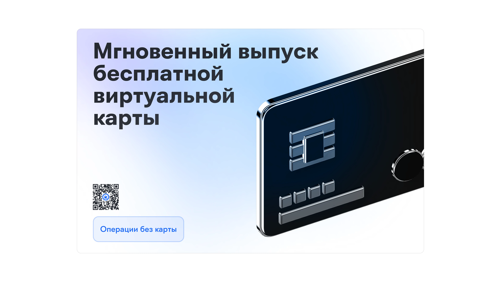
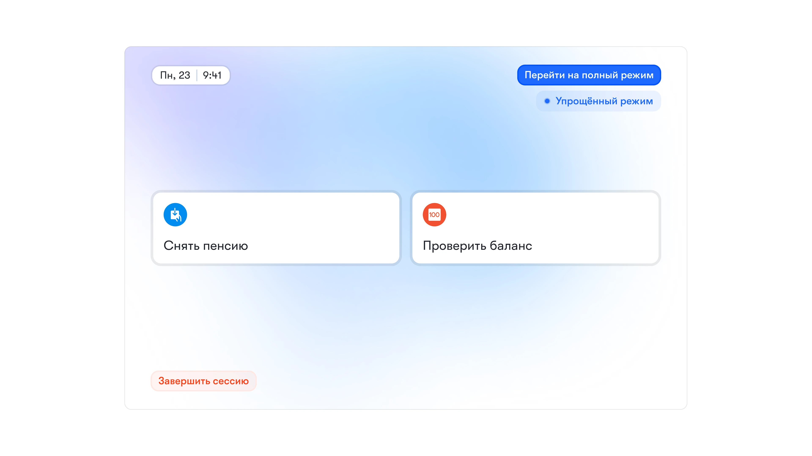
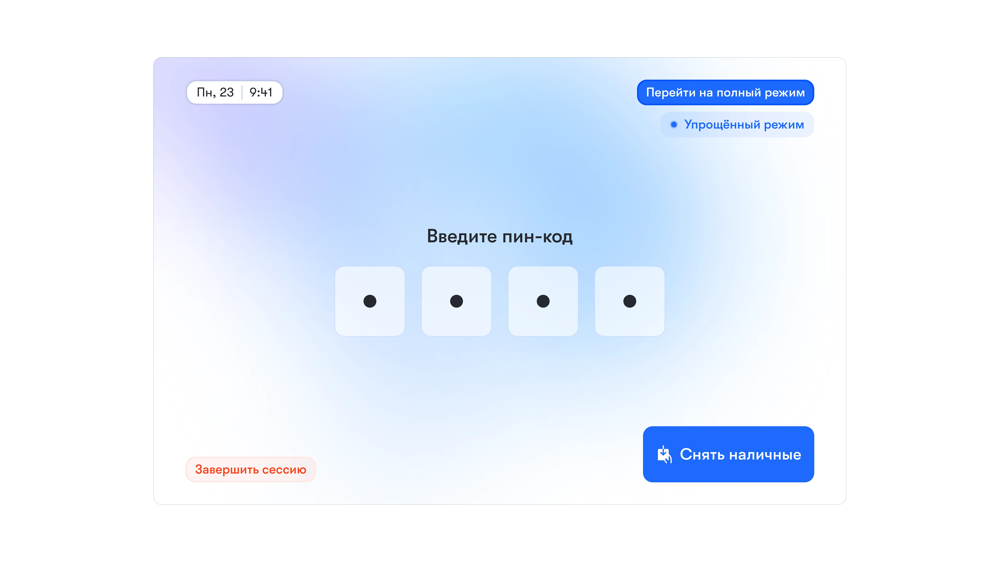
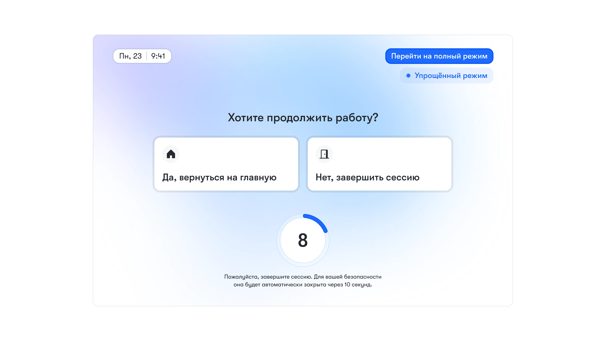
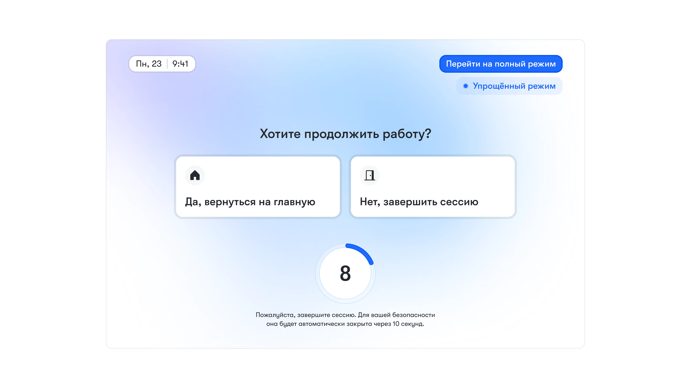

Совершенствование UX банкомата
Задача
Разработать решение для повышения удобства и эффективности использования банкоматов.
Обозначение цели
Банкоматы являются неотъемлемой частью финансовой жизни. Несмотря на то что эта технология существует давно и прочно интегрирована в нашу повседневность, пользовательский опыт кардинально не менялся. Улучшение взаимодействия с банкоматом позволит клиентам надёжно, безопасно, просто и комфортно выполнять денежные операции. Это, в свою очередь, повысит доверие к банку и его услугам, привлечёт новых клиентов, снизит нагрузку на пердставителей банка и службу поддержки. Кроме того, это расширит предоставление услуг на недостаточно охваченные аудитории, что в совокупности может привести к значительному увеличению доходов компании.
Определение аудитории
Две основные группы, на которые банк распространяет свои услуги, — это юридические и физические лица. В рамках нашей задачи мы сконцентрируемся на физических лицах.
Банкоматами пользуются люди разных возрастов, доходов, социальных классов и групп. Но можно стратифицировать пользователей по их опыту использования и определённым особенностям, которые обуславлавливают их пользовательский опыт.
Молодёжь и люди среднего возрастаЭта группа клиентов обычно хорошо разбирается в технологиях, часто пользуется банкоматом, и у них нет проблем с ним справиться. Это также самая крупная когорта клиентов банка, поскольку они составляют основную часть экономически активного населения и, соответственно, чаще и больше взаимодействуют с финансовыми услугами.
ПодросткиХотя они несовершеннолетние и не входят в общую когорту рабочей силы, подростки всё больше расширяют свои экономические права и могут являться клиентами банка. Родители могут оформлять им дебетовые карты как дополнительную к своему счёту, так и на индивидуальный счёт подростка. Современные подростки не имеют проблем с тем, чтобы разобраться в технических аспектах банкомата или мобильного приложения, но они не так финансово грамотны, как взрослые люди, и требуют большего контроля со стороны родителей.
Пожилые людиЧасто цифровые продукты не так просто им даются, хотя пожилые люди всё равно являются экономически активными, и им необходим такой же доступ к услугам и продуктам банка. Улучшение опыта использования банкомата может сделать его привлекательным для них, а также повысить лояльность к банку.
ИностранцыИм также необходимо пользоваться банкоматом, и эти пользователи ожидают, что их опыт будет учтён, а свои потребности они смогут удовлетворить на привычном языке.
Люди с особыми потребностями здоровьяСуществует много состояний здоровья, которые затрудняют пользование банкоматом, и улучшения во взаимодействии с ним могут помочь клиентам, нуждающимся в дополнительных функциях или тем, кому необходимо отсутствие физических ограничений.
Понимание контекста и потребностей аудитории
Банкоматы размещаются таким образом, чтобы человек мог получить к ним доступ быстро, в удобное время и, обычно, близко к местам, где совершаются денежные расчёты. Поэтому это, как правило, людные места, например, центр города, зоны высокой концентрации людей в районах (магазины и торговые центры) и отделения банков.
Если банкомат вынесен на улицу, приходится пользоваться им в различных погодных условиях: может идти снег, дождь, светить солнце и засвечивать экран. Кроме того, около банкомата часто собираются очереди, что нервирует людей и может создавать давление на того, кто им в этот момент пользуется.
Клиенты ожидают, что банкомат будет доступен 24/7, особенно если он находится на улице, а в некоторых случаях — и внутри зданий или отделений банка после их закрытия. Пользователи также рассчитывают на круглосуточную поддержку, если вдруг что-то пойдёт не так.
Кроме этого, пользователи ожидают, что банкомат обслуживается: он чист, все кнопки работают, стабильно завозятся наличные деньги в различном номинале, есть наличные в другой валюте, все функции доступны и что он в целом функционирует.
Бесконтактная оплата широко распространилась и вошла в обиход, поэтому банкомат должен её поддерживать. Вместе с этим следует обеспечить поддержку как минимум популярных платёжных систем, а также ограниченного круга действий, которые можно совершать без необходимости запоминать PIN-код.
Важным моментом остаются безопасность и обеспечение конфиденциальности действий, которые клиент проводит за банкоматом.
Также следует обращать внимание на эмоциональный аспект использования банкомата. Весь опыт взаимодействия должен быть ясным, простым, комфортным, ненапряжённым, предотвращать ошибки или корректно сообщать о них.
Отдельно стоит учитывать элементы доступности: шрифт Брайля, аудиоассистент, отсутствие физических препятствий и удобное расположение аппарата.
Основные функции, которые предлагает банкомат:
-
приём и выдача наличных;
-
проверка баланса на счёте;
-
печать выписок;
-
оплата услуг;
-
перевод денег на другие счета;
-
выдача наличных в другой валюте;
-
оплата кредитов и пополнение депозитов;
-
действия с картой (активация, блокировка, смена PIN-кода и другое).
Из всех перечисленных функций эксклюзивными для банкомата являются операции с наличными — их получение и приём, — а также, в некоторых случаях, печать выписок. Это важный фактор, который необходимо учитывать при разработке дизайн-решения.
Генерация идей
В результате мозгового штурма были сформулированы следующие идеи:
- редизайн интерфейса;
- упрощённый режим;
- контекстная адаптация;
- персонализированный банкомат;
- редизайн физического оборудования.
Персонализированный банкомат
Пользователь сможет настроить через мобильный банкинг список «любимых» и наиболее частых операций, которые будут быстро доступны на экране банкомата после бесконтактной идентификации, минимизируя количество шагов и упрощая взаимодействие.
Это решение позволит продолжить концепцию интеграции мобильного приложения с банкоматом.
Приоритизация и выбор идеи
Влияние дизайн-решения на разнообразные сегменты пользователей:
Молодёжь и люди среднего возрастаЭта группа хорошо разбирается в технологиях, поэтому данная функция может помочь им сэкономить важный ресурс — время. Хотя большую часть операций они совершают через мобильный или интернет-банкинг, иногда им требуется проводить операции с наличными. Благодаря этой функции они смогут пользоваться банкоматом ещё быстрее.
ПодросткиОни не испытывают проблем с тем, чтобы разобраться, как работают те или иные технологии, но важной спецификой этой группы пользователей является недостаточная финансовая грамотность и родительский контроль за их действиями с деньгами. Быстрые функции помогут подросткам снизить порог перед денежными и банковскими операциями и раньше научиться их совершать, не теряясь в ненужных для них функциях, а также добавят родителям больше возможностей для контроля за деньгами их детей.
Пожилые людиЭту группу мы выделим отдельно и будем приоритизировать в данном решении. Возможность настроить несколько наиболее важных для них функций через мобильное приложение — с помощью родственников, сотрудников банка или благодаря «умным подсказкам» в мобильном банкинге — позволит уменьшить страх перед банкоматом.
Люди с особыми потребностями здоровьяСостояния здоровья могут быть очень разными, поэтому оценить охват будет сложнее. Благодаря этой функции элементов на экране станет меньше, они будут более крупными и чёткими, что в сочетании с интеграцией аудиоассистента сделает опыт использования более удобным и доступным. Хотя физическая доступность банкомата (высота, отсутствие препятствий) по-прежнему имеет решающее значение, упрощение интерфейса позволяет минимизировать перемещения, что даёт дополнительные преимущества.
ИностранцыЭту группу наше решение будет охватывать в меньшей степени. Стандартный многоязычный интерфейс они, скорее всего, найдут более полезным.
Это решение напрямую удовлетворяет ключевые потребности клиентов:
- ускоряется процесс использования;
- меньшее количество шагов и отсутствие лишней информации в интерфейсе упрощает использование;
- снижается стресс и напряжение;
- повышается доступность банкомата;
- обеспечивается безопасность благодаря современным методам идентификации.
Это решение позволит лишь косвенно повлиять на доход компании, обеспечивая:
- повышение лояльности клиентов;
- привлечение новых клиентов;
- снижение операционных расходов за счёт уменьшения количества обращений в службу поддержки и к сотрудникам банка;
- а также положительное влияние инновационных и инклюзивных решений на бренд компании.
Дизайн-решение
Переход к персонализации банкомата осуществляется с главного экрана в области функций быстрого доступа.
Пользователь может выбрать операцию из широкого списка или воспользоваться подсказкой системы, которая формируется на основе его частых действий. Кроме того, операции можно удалять по отдельности или полностью очистить список.

Операции можно переименовывать и гибко настраивать.

Пользователь сканирует QR-код (если нет доступа к функции бесконтактной идентификации) либо использует NFC на телефоне или карту. После этого взаимодействие продолжается в интерфейсе банкомата.
На сплэш-скрине банкомата можно найти QR-код и идентифицироваться с помощью него.

После этого пользователь видит персонализированный экран функций с возможностью перехода на полноценный режим интерфейса банкомата.

После выбора операции пользователь должен пройти авторизацию…

и забрать деньги.
А дальше продолжить выполнение операций или завершить работу.
Примерно так выглядит флоу пожилого человека в новом интерфейсе банкомата:
   

Измерение успеха
Для оценки эффективности предложенного дизайн-решения и подтверждения его ценности, необходимо определить метрики. Если данное решение будет успешным, мы увидим:
-
Сокращение времени выполнения операции:
Среднее время, затрачиваемое пользователем на выполнение типовых операций через персонализированный банкомат по сравнению со стандартным использованием.
Существенное сокращение времени за счет предварительной настройки и упрощенного интерфейса.
-
Повышение показателя успешности задач:
Процент успешно завершенных операций без ошибок со стороны пользователя, особенно для сложных или редко выполняемых операций.
Увеличение процента успешных операций, особенно среди пожилых людей и менее опытных пользователей.
-
Увеличение частоты использования функции:
Количество уникальных пользователей, регулярно использующих функцию персонализации операций в мобильном приложении и/или подключающихся к банкомату через QR/NFC.
Высокий уровень вовлеченности в новую функциональность.
-
Рост показателя удовлетворенности клиентов:
Измерение готовности клиентов рекомендовать банк и его услуги (в частности, улучшенный опыт использования банкомата) другим.
Увеличение NPS за счет повышения удобства, безопасности и инновационности сервиса.
-
Снижение количества обращений в службу поддержки:
Уменьшение числа обращений клиентов, связанных с трудностями при использовании банкомата или необходимостью получения помощи от сотрудников банка.
Сокращение операционных расходов и повышение эффективности работы поддержки.